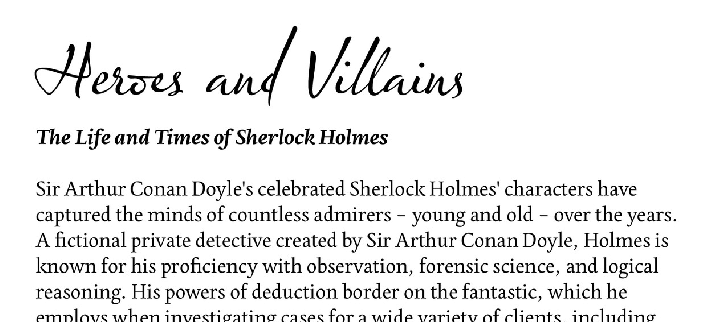

Brief The brief was to design an interactive website telling the story of Sherlock Holmes. This project was about gathering extensive visual inspiration, deciding on a direction and designing fun illustrations.
Prior to this project I had never read or watched a Sherlock Holmes series, therefore I had a lot of catching up to do. With a trip to London at the start of the academic year, it would have been a wasted opportunity not to visit the museum at 221b Baker’s Street. The experience involved a tour of Sherlock Holmes’ House which looks exactly as described in the books written by Arthur Conan Doyle. A very cluttered, busy house layout that held numerous recognisable elements such as smoking pipes, magnifying glasses, deerstalker hats etc. I was able to pick up loads of visual inspiration from each of the rooms as well as the souvenir shop.
Research After gathering my visual inspiration from the museum, books, movies, tv series etc, I decided to organise them into two different styles. What I called ‘Old Sherlock’ meaning the traditional, original Sherlock set back in the 1880s and ‘New Sherlock’ the more modernised version seen on the likes of the BBC series. It was so interesting to see how the same character had visually changed over time to stay up to date with what is current. This enabled me to identify the style I wanted to persue, which was the more traditional look and feel representing the 'Old Sherlock' with modern influences as we were working digitally to tell his story.
Process With a direction in mind, it made my font pairing struggle much more straight forward. Olicana was chosen for the headings, a hand written style font that looks as though it was written in a foundation pen similar to what was used in the letters found at the Sherlock Holmes Museum. Edita, chosen for the body copy, is a serif font with a slightly more interesting feel than your usual serif font. I particularly like their swoosh styling of the letter ‘k’, similar to Olicana's, and therefore I believed fitted perfectly.

From my findings, a less commonly used colour is dark green. Picked up from the likes of books, the signage at the museum and the wallpaper inside sherlock’s house. I believe a dark royal green suits the Sherlock Holmes character as the colour represents ambition and greed. More frequently used is the colour range from red to brown, again found from books and decor at the Sherlock Museum, which I used as a contrasting secondary colour palette.
I wanted to create a very illustrated website as I believe a image can tell a story much better than words. I sketched out the plans of each page, starting with the home page that uses an illustration of 221b Baker Street just liked I photographed of the museum and similar to the painting I found in the souvenir shop. This illustration will act as navigation, clicking on the windows to enter different pages. There are 4 main pages which can be viewed by a horizontal scroll, to give the viewer the illusion they are looking around the 4 walls of Sherlock's room. These 4 main pages include an illustration each of the characters on a detective pin board, a map of London city, a bookshelf of the Sherlock Holmes' novels and short stories as well as a photo frame wall of the famous movies. Each page is highly interactive where you have to click on certain elements to reveal hidden content much like Sherlock searching for clues.
Outcome With my research complete and wireframes drawn up, it was time to build a prototype to properly visualise my idea of how my final website would like look as well as considering how the user would interact with it to tell the Sherlock Holmes story in the most effective way. This is where I was able to bring together all my visual elements such as typography, colour and illustration style, as well as adding fun interactions.
Developing a prototype before the final build made it so much easier to test and iterate my designs. Meaning it was a pretty straight forward process when it came to building it in code. It's always so interesting to see your design come to life and functionally work in a web browser. As always there were a few minor changes in terms of layout that happening along the way but overall my website is very close to the prototype. That this point I considered adding fun animations, I believed this would add to the story telling and entertain users further.
Reflections I loved this project because there was the creative freedom to design the website how we feel would best tell the story of Sherlock Holmes. My visual inspiration was very much based on my trip to the 221b Baker Street museum, being able to collect first hand research and gain a feel for the Sherlock Holmes story in real life was exactly what I needed to spark my direction for this project. With the use of detailed illustrations and fun animations the user is navigated through Holmes’ room. I believe I’ve built a fun experience, almost as if the user is taking a virtual tour of 221b Baker Street, which is definitely what tells the story. To read my research and process in full, view my research notes.